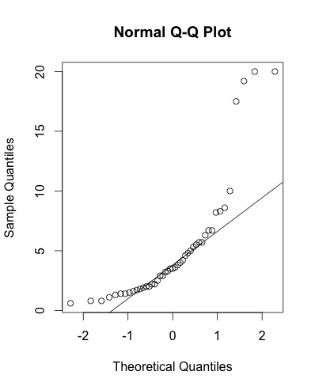
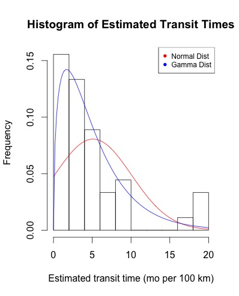

The African Honey Bee (AHB), also nicknamed the "killer bee", has had a significant impact on the agricultural economy. This species is unique from many other bees because of its extremely defensive nature and the tendency of its colonies to swarm and spread. The implications of the AHB has been astronimical. Areas populated by AHB colonies have been quarantined, prohibiting the importation of the European Honey Bee. The subsequent lack of bees has taken a toll on crop pollination. Thus, there has been strong interest in predicting the arrival of the AHB to the United States. The case studied is heavily taken from the work of Matis and Kiffe. In order to obtain the data below, cardboard box traps with a chemical attractant were placed at an average of every 93km (OR 300-500???m). Then, every month, the boxes were checked for presence of the AHB.
It was initially thought that the data would follow a normal distribution. However, after fitting a normal QQ plot, we noticed that our data doesn't lie on the 45 degree line. We noticed that the sample quantiles towards the right are significantly larger than the theoretical quantiles the normal distribution would predict. If we were to use a normal distribution to model our data, it would severly underpredict the frequency of extreme values of x. This means that we would understate the possibilities of the AHB arrival. Knowing this, it's possible that we can fit a better distribution function for the AHB data with the gamma distribution.
The Gamma Distribution is a continuous probability density function that is used to model the time required to perform some operation. Just as the Poisson distribution is the time-continuous distribution of the binomial, so is the gamma distribution the time-continuous analog of the negative binomial. The Gamma is a prediction of the time of the "rth" random arrival of some event. In this case, we were looking at the rth bee. A Gamma distribution was chosen to model the unimodal, skewed distribution which takes on only positive values. Here they look at the reciprocal of speed, the "transit time" which models instead, the time required to travel a fixed distance. Displayed below is a graph of the normal vs. the gamma distribution fitted on the data of the estimated transit time for AHBs. We see that the gamma distribution fits the data a lot better and weighs right tailed distributions more likely compared to the normal distribution.
The Gamma distribution was found to be a good predictor of the African Honey Bee arrival time. The best fit gamma distribution for this data had an alpha value of 1.61 and a beta value of 2.37. The strength of such a distribution is its ability to take into account the natural variability of the arrival. However, its limitations are also plentiful as there are many conditions that are static. For instance, this distribution does not take into account the presence of any predators or environmental factors.
Alpha and Beta values are both positive where α is a shape parameter and β is a scale parameter. When α is an integer,